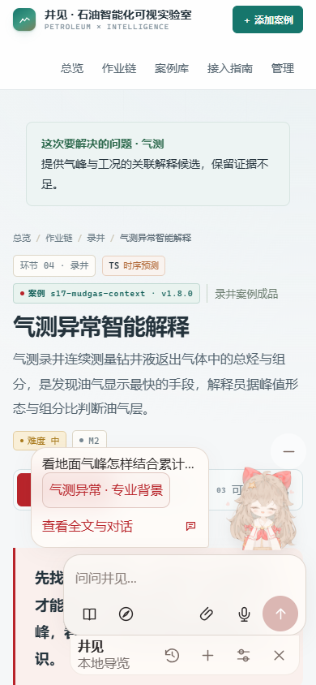

井见助手 · 0.6.0
同一个Live2D人物持续显示，小输入框位于人物下方。最新回复用气泡呈现，完整对话与历史按需打开。

浏览器：核心35项、路径16项、媒体11项。源码与文件核对：1401项。全61例算法不在本轮重新验收范围。
在线模型采用接口替身；未验证实体麦克风、扬声器和真实手机软键盘。沙箱存储限制与并行教学内容变更另行记录，未合并为浏览器通过。
阅读完整验收记录 · 查看文件与源码结果 · 查看核心交互结果 · 查看兼容路径结果 · 查看媒体接线结果
下载完整站点 · 下载61例合集